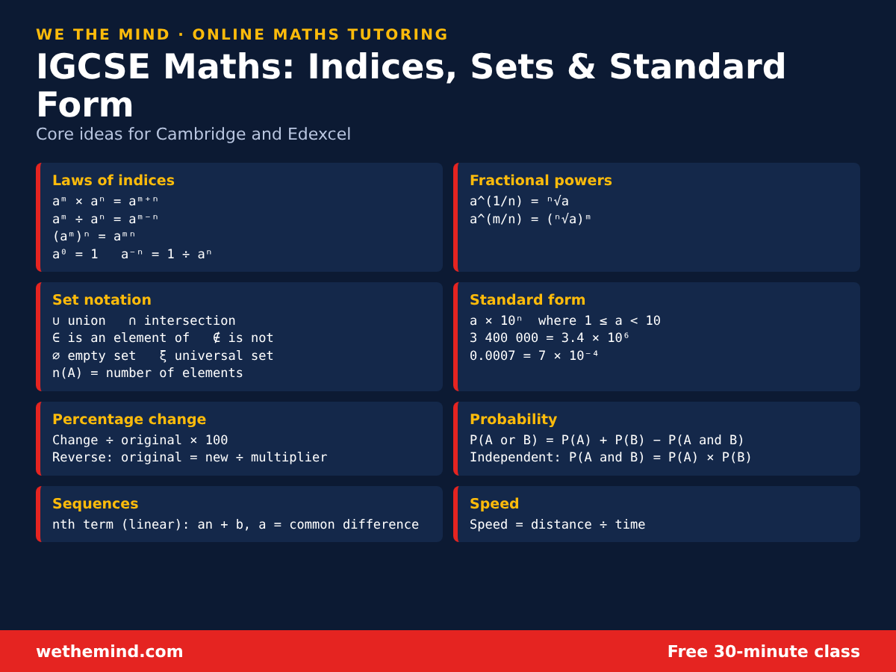

Education › IGCSE Maths Online Tutor
IGCSE Maths Online Tutor — Cambridge & Edexcel
Live lessons built around your syllabus and past papers, with clear worked solutions and focused revision.

Exam format at a glance
| Boards | Cambridge IGCSE and Pearson Edexcel International GCSE |
|---|---|
| Tiers | Core and Extended (Cambridge); Foundation and Higher (Edexcel) |
| Practice | We train on your board's past papers and mark schemes |
| Exam skills | Showing method, calculator use and checking answers |
What we cover
- Number, set notation and indices
- Algebra and sequences
- Functions and graphs
- Geometry, mensuration and vectors
- Trigonometry and Pythagoras
- Transformations and matrices
- Statistics and probability
- Extended: calculus and functions
A typical 4-week plan
- Week 1: diagnostic paper and a topic map
- Week 2: topic lessons and exam-style questions
- Week 3: mixed practice and timed sections
- Week 4: full paper and a review
How classes work
Every class is live and interactive on a shared digital whiteboard. Choose one-to-one mentoring, or a small group of 2–10 students on the same board and subject. Your first 30-minute class is free, and prices are on the pricing page.
Frequently asked questions
Do you teach Cambridge and Edexcel?
Yes, both, at Core/Extended and Foundation/Higher.
Do you use past papers?
Yes, from your board, with mark-scheme-style answers.
Is there a free trial?
Yes, the first class is 30 minutes and free.
Can I join a group?
Yes, small groups on the same board and subject.